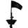
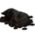
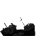

Our Crew Members So Far.
Vampirates are not what they seem, neither are people on the internet. Therefore the Tempest Twins site has elected not to use real names. If you wish to contact us (via the squeak page), you will be prompted for your character name. This name will be listed here and only that person can use it, in connection with the same email address, to submit anything to be posted here.
He is someone who keeps us following his every word. Captains command because of skill, daring, and the ability to win prizes and booty. They lead with a voice of ultimate authority. In some cases pirate ships elected their Captains through a vote. If the Captain fell out of favour the crew were just as quick to maroon them, throw them overboard, or perhaps if they were lucky the crew would just let them off at the nearest port. The Captain didn't have the last say, except in the midst of battle.
I am the Quartermaster (Lieutenant or second in command) and I also manage this website. My two pinkys are Powder Monkey Black William Flint and Swabbie Calico Bess Flint. The Quartermaster is almost the Captain's equal, during times of battle the Captain has ultimate authority, but at all other times he and the crew were under the command of the Quartermaster. Their duty was to represent the crews interests and enforce discipline at sea. A powder monkey refers to a child who ran the gunpowder to the cannons during battle. A swabbie or swab was a crew member who mopped the decks using a swab.
The Nocturn is the Captain of the original Vampirates fan website, The Nocturn.
A member of the Deviant Art community.
"Darcy preys on those she sees as pointless to society, as well as the odd superstitious maniac wielding a wooden cross and a clove of garlic. Darcy was captain of The Hellraiser; a mysterious galleon lurking in the shadows of overcast clouds, with sails of sin and rudders of rebellion. The Hellraiser was home to the rejects of society. Werewolves, ghosts, witches, vampires, stoned imps; you name it, the Hellraiser had it. Long ago, Darcy had a relationship with Mosh Zu Kamal, but he left her broken-hearted when he decided to run the Sanctuary and ration his meals instead of living like a true vampire. As a result, Darcy joined forces with the King of the Renegades; Sidorio. Enchanted by every essence of his aura, Darcy tries her best to impress Sidorio, but to no avail. Despite seeming like an evil such-and-such, deep down Darcy is a kind vampire with a broken heart and a strong bloodlust." "I realised I don't have a job on the ship :/ I do have an unhealthy obsession with being clean and tidy and organised! :)". Boatswain (bosun or bos'un) - ship's officer in charge of maintenance of the vessel, rigging and sails, and sometimes also third or fourth mate right under the Quartermaster.
"I love the books and the the latest, Blood Captain, has left me crying out for more news about the twins and their adventures!" A cabin boy or girl was usually a child that worked on board the pirate ship as a servant.

Chlotsuintha AgueHi, just in case you\'re wondering, Ague was the term for malaria a long time ago (and no, that is not my actual name)
"This website is totally and completely awesome! Grace is my favourite character! Thanks so much for creating this website! I LOVE Vampirates I wish it would be around for ever."
A member of the Nocturn. A cook can prepare tasty (?) meals at sea.
Cutlass Chloe
I really like this website you have going. I very much enjoy the books. Sometimes I like to think its all real, and I\'m living in it. But that\'s just my inner reader coming out. I love this website, I just found it today. I have been looking (well not very well) for a website sort of like this one you have here. I\'m sorry if I\'m boring you. I just wanted to say good work! And all of us Vampirate lover\'s appreciate it!!! Oh and I enjoyed reading the blog type thing you have going with the discussion over the issue of the books becoming movies or a tv series. Very informative!!! Keep all this up! :)
Emily Cullen
i read the first book and i'm looking forward 2 reading the next one. but the wierd thing was that the copy that i have says 'not for sale', so was wondering where my brother got it from. anyway, if u read the Twilight series, u'd know my brother Edward Cullen. we're vampires too, but different to Lorcan's kind. we're able to be expose into sunlight, but we'll shimmer. i was not mentioned in the series of books cos i wasn't found yet, so i'm new to the Cullens. i'll be happy 2 share my stories with u, if i can get permission to use Lorcan and Grace in my book.
The Gunner's first mate was responsible for assisting the Master Gunner. From the ship's guns and ammunition, keeping the powder dry to keeping all weapons in good repair.
Healer Fenix Sky
"I am over joyed to find others who have totally indulged themselves in Vampirates as I have. I love Vampirates.. ... Okay, I could go on forever so I'll stop."
The surname Pilot used to be associated with the person who steers ships. The job of Pilot, like the surname, is the title for the helmsman.
Jarod Swank
"... By the way the website rocks! ... Tell Justin Somper that he is awesome!! Althogh I know he probably gets that a lot!"
"I am a very enchanted Vampirates fan....and it is all i read now. lol. Kataya Gray (born October 6, 1889 - died December 25, 1907 by murder) is a person that likes to keep to herself, and enjoys the silence. Mostly using her time to expand her mind by extensive reading. Has occasions where she will just want to be around people, and will come out of her shell. Kataya has a distinct dislike for Christmas, for that is the day she was brutally murdered for being at the wrong place at the wrong time. She has come to terms with her death, but feels extremely uneasy about it when mentioned. Kataya finds her solace in the peaceful night, and loves watching the stars. Wakeman is a name for someone that stays up all night to keep watch over the ship."
Lizzie Furey
But Cap'n Lizzie Furey on her own ship. "My crossing was quick I was bitten by a Exiled Vampirate. My cousin Lorcan and I died at the same time when I woke I was lying on the deck of "The Nocturne" I was 15 and scared but I was well looked after by the crew. After my stay on the nocturne I gained my own ship i begged lorcan to come with me but he refused saying he was destined for it and to this day I still visit the ship that gave me hope"
"I was Born in 1842 death in 1856 in life I was a runner in a pirate ship called THE SIRIN. Our flag was a sirin drinking happily rum with a pirate. I was killed in a surprise battle by two nayve soldiers in death i still have two "bloody" scars on my back. NOCTURN is the best place to be if you are a vampirate like my self its peaceful and our captain is very kind!" The surname Runner means smuggler.
"Hi! Well, this is my crossing story. I lived in the 1500s and was good friends with a girl named alezandra. I was friends with her because we both had way too much imagination. She used to tell me stories of how her father, her only family, was a vampire. She would never actually tell me who her father was, though.
Than, one night, I was over at her house, teasing her about how she was home schooled and was going to die of social deprivation. As far as I knew, besides me and her father, she was alone all of the time. Than, she stopped joking with me and started shoving my things into my back pack,"go, go, go"! she told me, practically pushing me out of the door."My dads home early"! And I died.
I found out later that Alazandra's dad had come up behind us and grabbed me. Lets leave it at 'I was dinner'. Oh, and I also found out who Alazandra's dad was.
Count Dracula.
I am still fourteen and a half, and I am still Great friends with Alazandra. We live as roomates on THE NOCTURNE. Not her dad though. He was killed by the townspeople when he refused to come out in the sunlight to the police at the door, they forced him out. Alazandra only barely escaped. And my name? Alazandra started calling me Apple after my crossing. Than I became Midshipman on THE NOCTURNE. I have been called Apple so long now, I have forgotten my real name."
A member of the Nocturn and also found contributing on the Blue Peter Blog. From Wikipedia - Born John Roberts (May 17, 1682 - February 10, 1722), Bartholomew Roberts, also known as Bart Roberts, was a Welsh pirate who raided shipping off the Americas and West Africa between 1719 and 1722. He was the most successful pirate of the Golden Age of Piracy, capturing far more ships than some of the best-known pirates of this era such as Blackbeard or Captain Kidd. He is estimated to have captured over 470 vessels. He is also known as Black Bart (Welsh: Barti Ddu), but this name was never used in his lifetime.
Nugglebuns
"I'm actually best friends with Bob Lea. And he based Grace Tempest on me (when he did the 3D render). I have Auburn hair (like Grace), Im Australian and I have the same figure and height as Grace (in the book she has green eyes, I have blue..but that doesnt matter and she's tanned, but Justin told Bob to make her pale and Im pale). So apart from the 3 year age gap and the eyes Im Grace Tempest from top to bottom. Id love to play her if they make movies of the series!! Sadly, Bob isnt the illustrator anymore :( if you dont believe me ... you can ask him yourself. So yeah....he based 3D Grace on me ^_^ cause Im the living incarnate of Grace Tempest lol!!
Ship's singer and entertainer and his son the Master Gunner. They are friends, willing to put up with my mad ideas and my son's best mate. A Master Gunner was responsible for the ship's guns and ammunition, from keeping the powder dry to keeping all weapons in good repair. He can also train the crew in rapid firing of the cannons.
Phoebe Furey
Hiya! I'm Lorcans sister, my crossing was quick but I refuse to tell the story as it wasn't a pleasant experience. I am now a member of the crew on The Nocturne and part of Lorcans battle force to see the end of the rebel vampirates. I have also become a pretty accomplished swordswoman!
She is in charge of the crew's provisions and accounts. As a Purser is the ship's officer in charge of provisions and accounts.

Purser's First Mate Honnor KedgerThe Purser is the ship's officer in charge of provisions and accounts. A Mate was an apprentice to the ship's officer and the First Mate was the most experienced apprentice. The surname Kedger means fisherman.
Sailing Master Archer D
I love Astrology, I've shot bow for 8 years. I'm completly and totally obsessed with VAMPIRATES!!!
you can also find me on the nocuture page (dafunke)
Sailor Anna Valerious
"Yes, I was on the blue Peter blog =) It was amazing and I still hope that Justin makes another blog soon (he said he would forever ago) ". She is also a member of the Nocturn.
Sailor Aurelia
A Nocturne crew mate and my twin is Sailor Imfermia. My full name is Aurelia Monica Absinthe. I was born in london,england in 1925 and died in 1940 during world war II'I was walking in the night and then a natsie grabed me and then he raped me. He was so strong I could barely move, and when he was done, he shot me in the head and i died. I woke up seeing a man right in my eyes and he told me that i was immortal and told me hazards and how I can only eat or drink blood, and I understood, years later I found the nocturne and now I'm in sancuary and now it's my home.
"I absolutely love Vampirates. Blood Captain was AMAZING!. I cant wait to read more. Great job on the site, I love it XD"
From Wikipedia - Blackadder is the generic name that encompasses four series of an acclaimed BBC One historical sitcom, along with several one-off installments. The first series was written by Richard Curtis and Rowan Atkinson, while subsequent episodes were written by Curtis and Ben Elton. The shows were produced by John Lloyd, and starred Rowan Atkinson as the eponymous anti-hero, Edmund Blackadder, and Tony Robinson as his sidekick/dogsbody, Baldrick.
She "cant wait to read the next book" and a very friendly pirate.
I am a sailor aboard the NOCTURNE. I am easily agrivated. They call me black dragon cause I'm probably have the temper of one. Sometimes I wish I could point a crossbow at Sidorio and get it over with. Being able to fight so well shocks my freinds. After all, I am as skinny as a pencil. I havent got any more to say.
Sailor Bubblemoon66
Loves writing stories on fan fiction

Sailor Darcy Flotsam"I guide the ship during the day, and an entertainer by night."
Sailor Darker
ok i soooooooooooo think vampirates should be a movie. Because even if the movies turn out bad its gonna draw people to the books to see if they are good or not.
"I looked on the internet and found some some quite interesting/bizarre vampire-ish names. For example 'Elvira' is mistress of the dark, and does sound quite good. By playing around with the name a bit I came up with 'Felavria' (FELL-AV-REEA). Nothing much like my real name, I know, but I think 'Sailor Felavria Vampire' sounds quite good."
"hi i just found the site looks great!"
A member of the Nocturn and also found contributing on the Blue Peter Blog.
Sailor Imfermia
My full name is Imfermia Maria Absinthe. I mourned my twin\'s death for a long time, but when I met my future husband Demetri, that all change. We married when I turned 17. I died during childbirth when I was 20 years old. The child survived. I don't know who crossed me, but a note was in my hand and it told me about what I needed to know. I do not know this mystery person's name, but I am greatful. Now I am reunited with my twin (Sailor Aurelia), and all is well.
Sailor Lorcan Lover
I Love your website!!!!!! I have read the whole vampirate saga 2 times!!!!!!! I love Lorcan Furey!!!!!
I love Vampirates!
Please tell us more about you. A Lagger is another name for a sailor.
Sailor Quarxphonix
"Ahoy there Vampirates peoples! I am Quarxphonix , the uber-vampirate nerd and a proud member of this crew. I love sitting writing odd little stories of what will happen next in the books, but that doesn't mean I have to stop doing my job (it's pretty hard being a sailor sometimes!) Anyways I hope you guys enjoy this website and the vampirates series. Trust the tide!"
Sailor Vanderdecken
The Captain of the Flying Dutchman is called Van der Decken (meaning of the decks). Sources disagree on whether "Flying Dutchman" was the name of the ship, or a nickname for her captain. The Flying Dutchman, according to folklore, is a ghost ship that can never go home, and is doomed to sail the oceans forever. The Flying Dutchman is usually spotted from afar, sometimes seen to be glowing with ghostly light. It is said that if she is hailed by another ship, her crew will often try to send messages to land or to people long since dead. In ocean lore, the sight of this phantom ship is reckoned by seafarers to be a portent of doom.
Sailor Vickyy
I love reading Vampirates. Can't wait for the 5th book to come out after Black Heart. Not keen on the cover of the new book but defo make it into a film..i love it. It would receive lots of fans and profit (Y) Go for it!! Trust the Tide (Y)
"Hi I'm Sarah the Vampire. Just call me Sarah. I'm a lagger on THE NOCTURNE. I was born 1803, same age as Lorcan, only I was sired when I was 16 in London. I was sired(turned vampire) when I was 16 by my Science teacher. I was killed by my ex-boyfriend slitting my throat after embarrassing him at the school. The captain found me in London after I turned on my teacher after he wanted me to do dirty work for him by the school. I LOVE the captain for saving me. I'm a lover of Halloween and now I am the one who sets the Halloween Feast on the ship. My donor's name is William. (I have a thing for him for about 200yrs now) SSSHHH!!!!!. I know it's wrong. I''l talk more later". "I'm, of course, new to the crew and I'm a fan of Lorcan and can't wait until Blood Caption comes out in my area on March, 26th."
A member of the Pirate Academy. The Sea Artist, Navigator or Sailing Master is in charge of sailing the ship, by reading and correcting maps / charts and using navigational tools. Possessing such knowledge often would make a person the Second Mate if he were not already the First Mate or Captain. The surname Cartographer means map maker.
Silver Ribbon Turning
I am a vampirates fanatic, craving for the next installment of Black Heart. Justin Somper had combined my two greatest addictions. I have always held a slightly above average interest in vampires, i guess some would say. In recenter years, though before my discovery of the Vampirates books, i have become to see the glorified life of a pirate tempting...as i am sure young master Tempest would agree. For now my eyes search the seas and hope that night comes swiftly carrying our kindly vampires and pirates on the tides.
Surgeon Tyrian Furey
"Hey, wow this is such a cool site Vampirates rule!!! ... It sounds fun. I see ducks foot darcy has already joined, shes my best friend and showed me the site." A Surgeon can heal wounded crewmen. Tyrian purple is also known as royal purple or imperial purple It is an expensive purple-red dye which was first produced by the ancient Phoenicians in the city of Tyre. Tyrian purple is harvested from fresh mucus secretion from the hypobranchial gland of a Bolinus brandaris sea snail.
aaaack it should so be a movie!!!! Oh lorcan my vampire lover!!! if i cant have you i want Johnny just because vampires are the most epic thing in existence and vampirates just....o m b this would be the franking best movie ever!!! o my franking fro i'm hyperventilating! ALL'S FAIR IN BLOOD AND GORE!
According to Arabic tradition, the Roc was an enormous bird that never lands on earth, only on the mountain Qaf, the centre of the world
Other Crew Members
Please tell us more about you.
Graces Evil Twin :]
grace_tempest_is_me
Just Sarah
Lady Kaus
Sailor Addie
Sailor Angel
Sailor Link123
Sailor LorcanXGrace
Sailor Snowy Star
Sailor Yoko
Sheeshan the Strength of the Waves
Wonkey Will


We are still looking for more members of our crew, below are some ideas. If there is a particular picture you would really like please say and if it is not already taken I will put it next to your name.
- Able Bodied Sailor (ABS) - normal Sailor
- Carpenter - A carpenter can make hull repairs at sea. He was in charge of maintenance and repair of the wooden hull, masts and yards. If the crew had no surgeon he also acted as surgeon!
- Cooper - A cooper can preserve food in sturdy barrels.
- Masters and Mates - A Mate was an apprentice to the Ship's Master, Boatswain, Carpenter, Gunner, etc.
- Rigger - A Sailor assigned to the rigging/sails.
- Sailmaker - A Sailmaker can make sail repairs at sea.
- Striker - A native of the West Indies, typically from Darien or the Mosquito Coast. They were expert hunters who trapped sea turtles and manatees; fished for sharks and other large fish; and also hunted wild game when the the crew came ashore. Their knowledge of local plants aided in collecting edible fruits and vegetables as well as medicinal plants and herbs.
For surnames try http://www.rootsweb.com/~illogan/jobs.htm or the list below:
- Apprentice - person bound to a skilled worker to learn the trade
- Archiator - physician
- Barber - barber; local dentist
- Bladesmith - swordmaker or knife maker
- Boardwright - carpenter
- Boatswain - ship's officer in charge of rigging and sails
- Bummer - army deserter
- Cafender - carpenter
- Caulker - person who fills up cracks in ships to make them watertight using tar or oakum-hemp fiber from old ropes
- Cooper - one who makes or repairs vessels formed of staves and hoops, such as casks, barrels, tubs, etc.
- Coxwain - ship or boat helmsman
- Joiner/Joyner - skilled carpenter
- Kedger - fisherman
- Leech - physician
- Manciple - steward
- Peregrinator - itinerant wanderer
- Piller - thief; robber
- Prentis - apprentice
- Puggard - thief
- Roper - maker of rope or nets
- Runner - smuggler
- Sawbones - physician
- Sawyer - carpenter who saws
- Ship Husband - repairer of ships while they were in harbour
- Waterman - boatman for hire